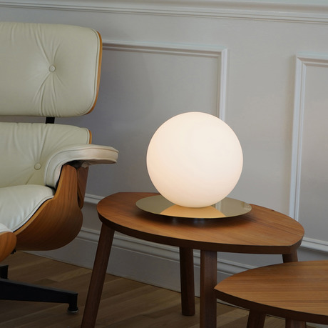
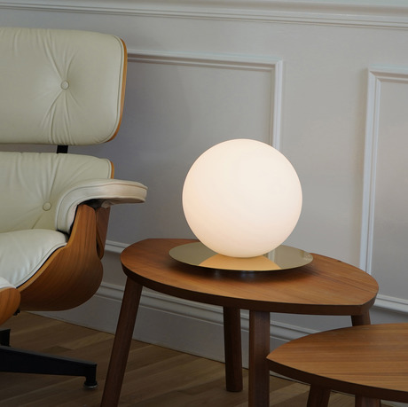

book review: Principles of Neural Information Theory - James Stone
James Stone writes an amazing book for anyone wanting to explore more information theory in the context of neuroscience. This book only
assumes basic linear algebra and some general mathematical familiarity in manipulating equations. Slowly walking through the different
ways information theory can be applied to biological systems, Stone clearly explains the motivation and details of how and why information
theory can be so effective, both theoretically and experimentally.
close
The Bola Sphere table lamp by Pablo Designs
The Bola Sphere table lamp is an impressive piece of design from the Venezuelan studio Pablo Designs. My home is fairly warm and soft with
light wood and fabric textures being the main elements so I often avoid polished metal but Pablo has created a lamp that fits perfectly in
my living room and I'm sure it could fit in yours too, and I don't know you.

close

close